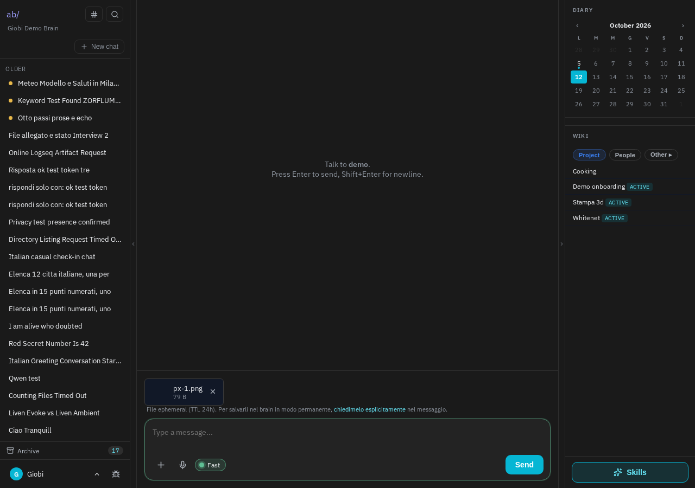
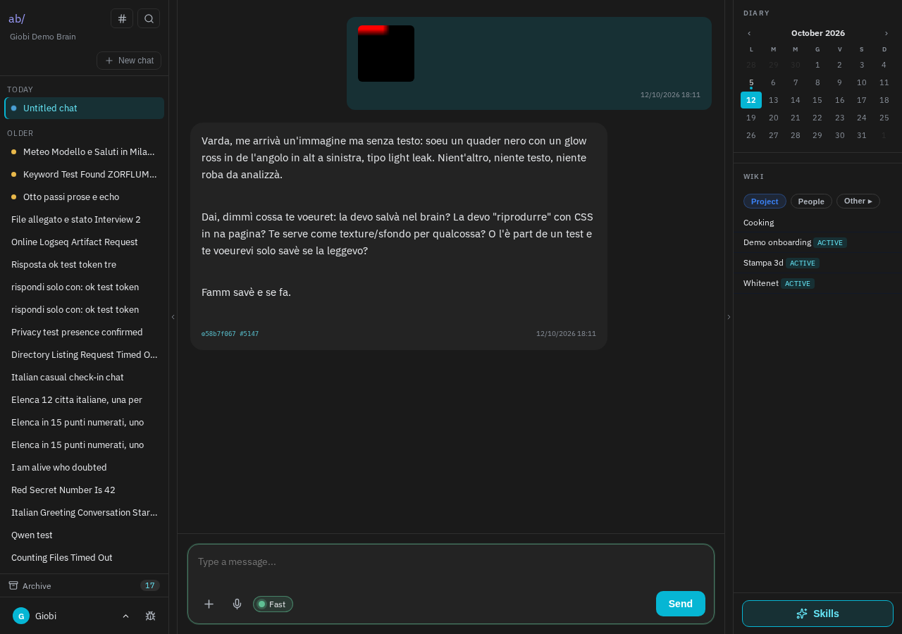
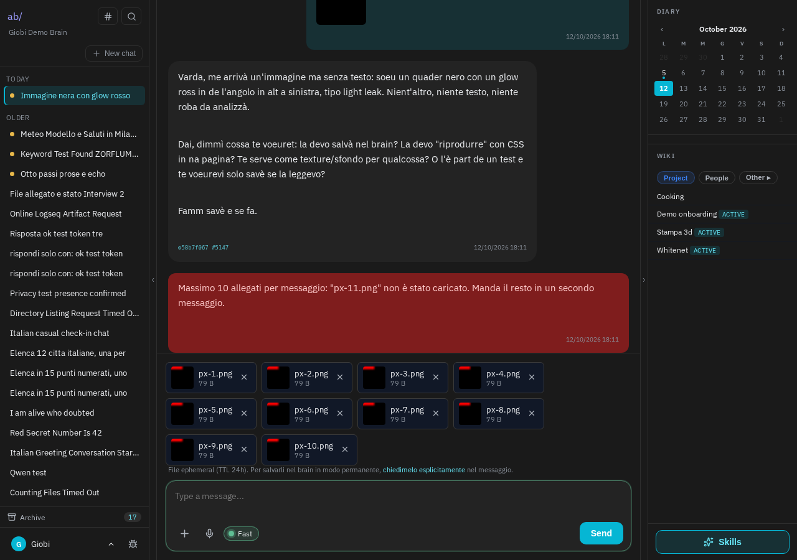
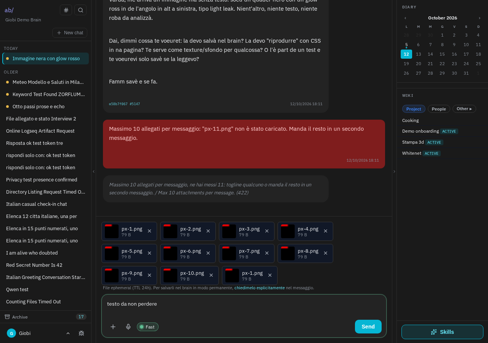

Allegare un'immagine e premere Invio senza scrivere niente faceva comparire "Richiesta rifiutata (422)", e la casella si svuotava: immagine e testo andavano persi. Ora un messaggio fatto di soli allegati parte normalmente e il brain risponde descrivendo l'immagine. Se si prova ad allegare più di 10 file, la chat lo dice prima di caricarli; e se il server rifiuta un invio, spiega perché e lascia testo e allegati al loro posto. La stessa correzione è già attiva su grbrain.com dalla mattina.
Chi allegava una foto e premeva Invio senza scrivere nulla vedeva un errore generico, e la casella si svuotava: per riprovare bisognava ricaricare tutto. Il server pretendeva che ci fosse sempre del testo, anche quando l'allegato bastava da solo. Un secondo caso, visibile nei registri: chi allegava più di 10 file riceveva lo stesso errore, senza nessun avviso prima. Di questo stato precedente non esiste uno screenshot: la prova sta nelle segnalazioni e nei registri del server, riportati nella scheda tecnica.
Siamo entrati su abchat.it con un browser reale (da internet, come un utente qualsiasi), nel brain di prova "Demo", abbiamo allegato un'immagine e premuto Invio senza scrivere niente.


Abbiamo selezionato 11 file in una volta. I primi 10 vengono caricati, l'undicesimo no, e compare subito un avviso che spiega il limite e cosa fare (mandare il resto in un secondo messaggio). Prima l'avviso non c'era e l'errore arrivava solo al momento dell'invio.

Per provare anche questo caso abbiamo forzato un invio con 11 allegati aggirando il blocco della pagina. Il server rifiuta, ma ora il messaggio dice chiaramente il motivo ("Massimo 10 allegati per messaggio, ne hai messi 11…"), e il testo scritto e gli allegati restano nella casella, pronti per essere corretti e rimandati.

| Campo | Valore |
|---|---|
| Install | avocado (abchat.it, container abc-php), checkout /var/abchat/app |
| Commit | 8af2c93 + d7bc26b + 2464ecf su village-v2 (su avocado: 8cf93aa, bc6c808, 5703790 via git cherry-pick) |
| Segnalazioni | abchat #60 #64 (Davide): "foto senza testo → 422"; stesso difetto su grbrain #121 e brain.emisfera.it #64 |
| Brain di prova | demo (utente giobimail@gmail.com, login via radar:login), sessione 454, job 58b7f067 |
| Backup pre-deploy | S3 giobi-archive/abchat/avocado/c3-pre-20261012.tgz (controller + blade) |
| Health | /login 200, 5945 byte prima e dopo (da esterno, via Cloudflare) |
| Non committato (altra sessione, non toccato) | website/app/Services/Chat/AutosaveGateway.php |
| Verdict | FIXED |
storage/tmp/c3-deploy/e2e.py nel brain di Giobi). Esiti: 11 upload 200, async-stream 200 per l'immagine sola (sessione 454), 422 parlante per gli 11 forzati, zero errori console, 10 allegati in barra dopo averne selezionati 11, testo e 11 allegati ripristinati dopo il rifiuto.git pull): l'install ha lavoro non committato di un'altra sessione, lasciato com'era. route:clear, config:clear, view:clear, restart del container php (opcache). Worker non riavviato: il codice dei job non cambia.